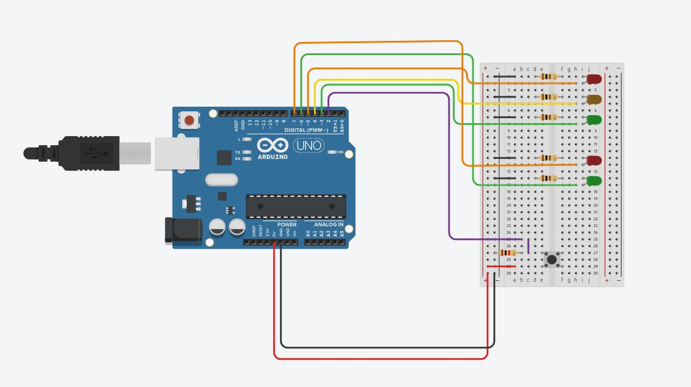

Miniprojekt: Semafor v Tinkercadu

Otevřít simulaci v Tinkercadu
Simulace semaforu u přechodu pro chodce
Popis
Úkolem bylo vytvořit buď fyzický obvod, nebo simulaci v Tinkercadu s použitím Arduino UNO. Připravil jsem simulaci semaforu pro přechod pro chodce.
Řídíme dva semafory současně: silniční (3 žárovky) a pěší (2 žárovky). V běžném provozu svítí zelená pro auta a červená pro chodce; po stisknutí tlačítka chceme opačný stav, ale s prodlevou pro bezpečné dokončení přechodu.
Kód
Program byl tvořen pomocí bloků (pro rychlou čitelnost pro začátečníky); níže je export i textová podoba.

// C++ code
int Aktivace = 0;
void setup()
{
pinMode(3, OUTPUT);
pinMode(4, OUTPUT);
pinMode(5, OUTPUT);
pinMode(6, OUTPUT);
pinMode(7, OUTPUT);
pinMode(2, INPUT);
digitalWrite(3, HIGH);
digitalWrite(4, LOW);
digitalWrite(5, LOW);
digitalWrite(6, LOW);
digitalWrite(7, HIGH);
// Nastavení auta zelená, chodci červená
}
void loop()
{
if (Aktivace == 1) {
// Prodleva pro chodce
delay(3000); // Wait for 3000 millisecond(s)
digitalWrite(3, LOW);
digitalWrite(4, HIGH);
digitalWrite(5, LOW);
digitalWrite(6, LOW);
digitalWrite(7, HIGH);
// Auta zastavují
delay(2000); // Wait for 2000 millisecond(s)
digitalWrite(3, LOW);
digitalWrite(4, LOW);
digitalWrite(5, HIGH);
digitalWrite(6, HIGH);
digitalWrite(7, LOW);
// Chodci přechází
delay(5000); // Wait for 5000 millisecond(s)
digitalWrite(3, LOW);
digitalWrite(4, HIGH);
digitalWrite(5, LOW);
digitalWrite(6, LOW);
digitalWrite(7, HIGH);
// Auta se rozjíždějí
delay(2000); // Wait for 2000 millisecond(s)
Aktivace = 0;
} else {
// Auta jezdí
digitalWrite(3, HIGH);
digitalWrite(4, LOW);
digitalWrite(5, LOW);
digitalWrite(6, LOW);
digitalWrite(7, HIGH);
}
if (digitalRead(2) == 1) {
Aktivace = 1;
}
// Aktivace přechodu
}
Odkaz
Návaznost na hlavní projekt
I když hlavní projekt obsahuje elektroniku, Arduino programování nebylo přímo použito. Elektronická část se soustředila na zapojení okruhu Baterie–Vysílač–ESC–Motor a na zapojení a kalibraci servomotorů.